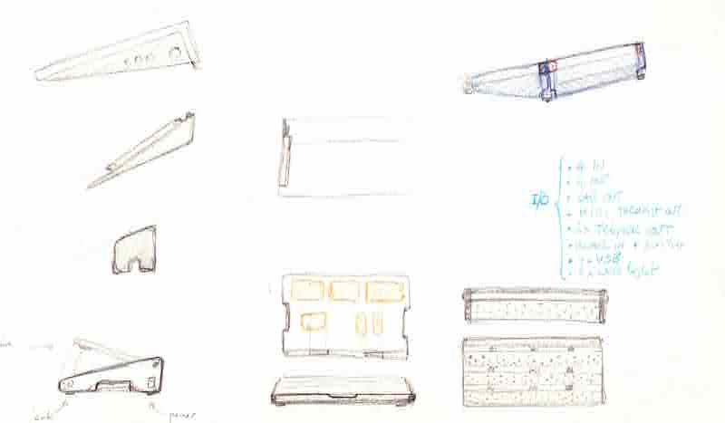

<!DOCTYPE html>
<html lang="en"></html>
<head>
  <meta charset="utf-8">
  <meta content="IE=edge" http-equiv="X-UA-Compatible">
  <meta content="width=device-width, initial-scale=1" name="viewport">
  <title> Rafael Rebolleda — Fab Academy 2020 Documentation</title>
  <!-- Google Fonts-->
  <link rel="stylesheet" href="https://fonts.googleapis.com/css?family=Catamaran&amp;display=swap">
  <link rel="stylesheet" href="../css/main.css">
</head>
<body> 
  <nav>
    <header>
      <ul>
        <li>Rafael Rebolleda</li>
        <li>ESNE + LEON</li>
        <li>Madrid, Spain</li>
      </ul>
      <p class="bio">Human Centric Research & Innovation consultant and professor. Also looking for PhD opportunities!</p>
    </header>
    <ol>
      <li><a href="../">About me</a></li>
      <li><a href="../W1/">W1: Project Mgnt.</a></li>
      <li><a href="../W2/">W2: CAD</a></li>
      <li><a href="../W3/">W3: CCC</a></li>
      <li><a href="../W4/">W4: Electronic Prod.</a></li>
      <li><a href="../W5/">W5: 3D Scan + Printing</a></li>
    </ol>
  </nav>
  <main>
    <h1>Final Project</h1>
    <p>I approach Fab Academy as a means to <b>prototype as many ideas as I can around around the theme presented above.</b>, as well as aqcuiring new skills to flesh them out beyond the notebook.</p>
    <p>To that extent, I foresee the final project taking shape as we advance through the program and I see how the learnings can be applied to my interests, by then doing self-contained micro-projects for each assignment. It's a somewhat similar approach to the one described in picture below (don't know who to credit it to!)</p>
    <p>Similar to the process described above, there's an underlying theme that connects all products, but these are actually all different, not necessarily part of a bigger project.</p>
    <h1>Final project ideas</h1>
    <p>I have a number of ideas around the <b>creation and manipulation of music: instruments, effects (re-parametrizers, as a good friend liked to call them :), accesories and devices in general that enable new ways of approaching music composition and performance.</b></p>
    <p>In particular, I'm interested in moving forward the <b>expresiveness</b> available to the performer in now-classic instruments, like electric guitars, which haven't really changed much since their original concept, as well as <b>bringing HCD and HCI approaches</b> to the design and development of <b>modern computational musical devices</b>.</p></p><p>Moreover, I'm particularly interested in moving my skills <b>from one-off, handmade products to semi-industrial, machine-made products</b>. I find that some of my ideas require a precision that is hard to achieve and/or replicate by hand</p>
  </main>
</body>